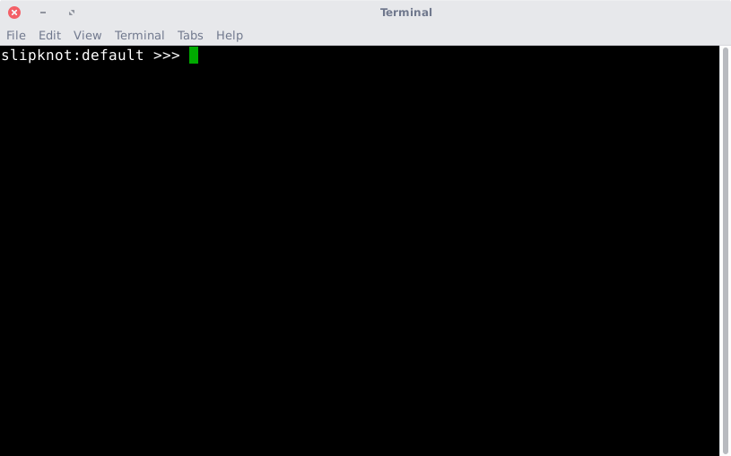
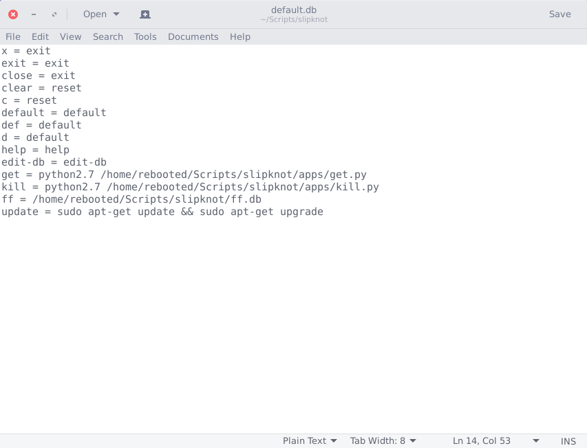
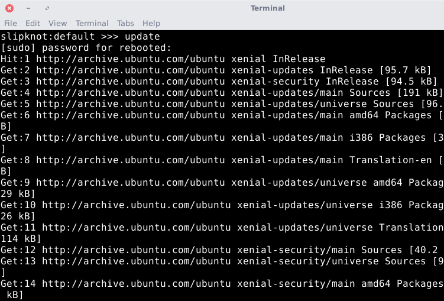
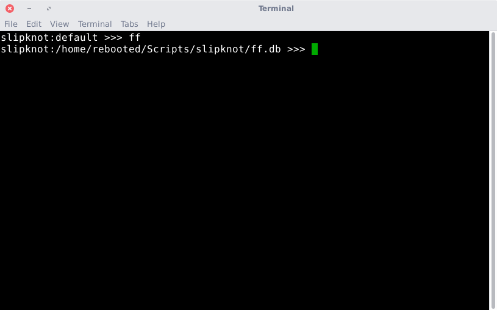

This is what you should see if everything works properly when you start up Slipknot.
This is a screenshot of a very basic database, containing all of the reserved keys, a link to another database, and a basic update key.
This is what Slipknot looks like, while running that basic update key from the database.
When you switch into another database, this is what it looks like. This database works exactly the same way as the default database, it just has different stuff in it.

...And this is what Slipknot looks like, running the key info, which
is linked to the command screenfetch.